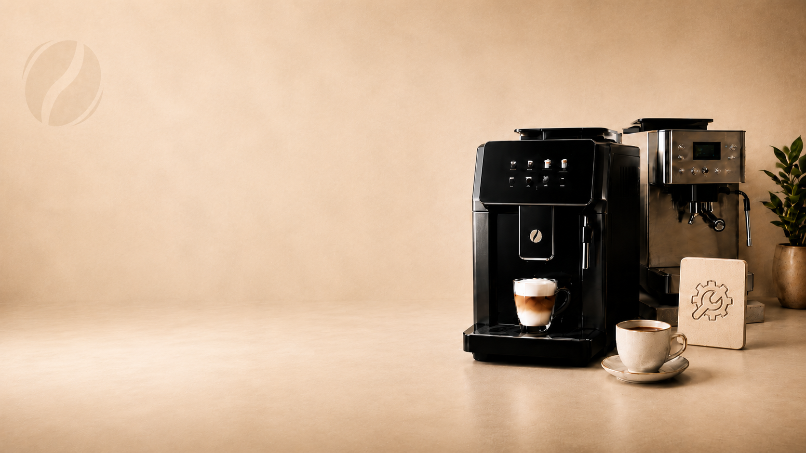
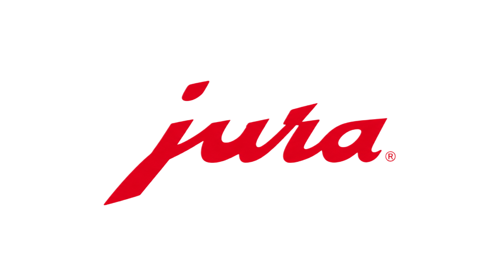
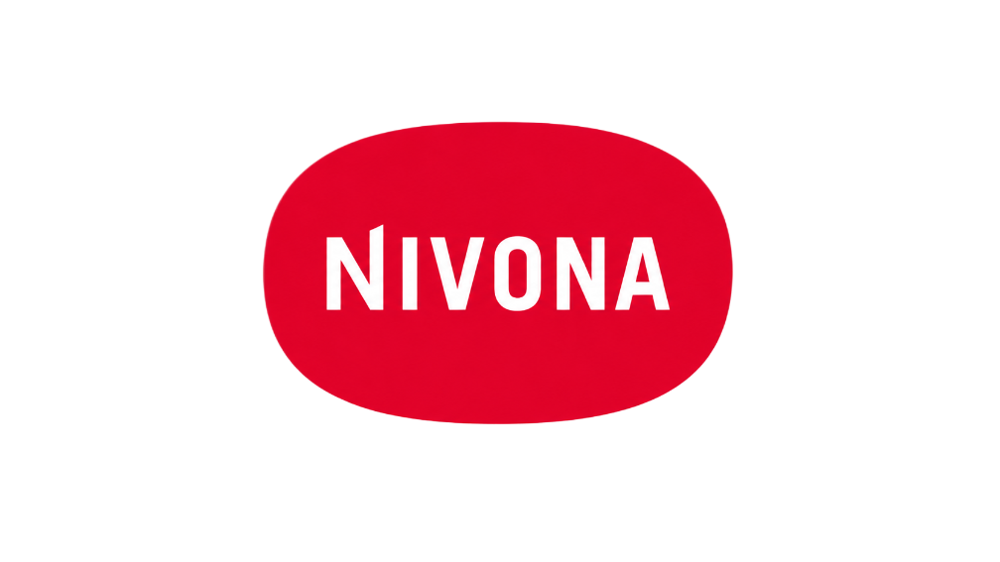
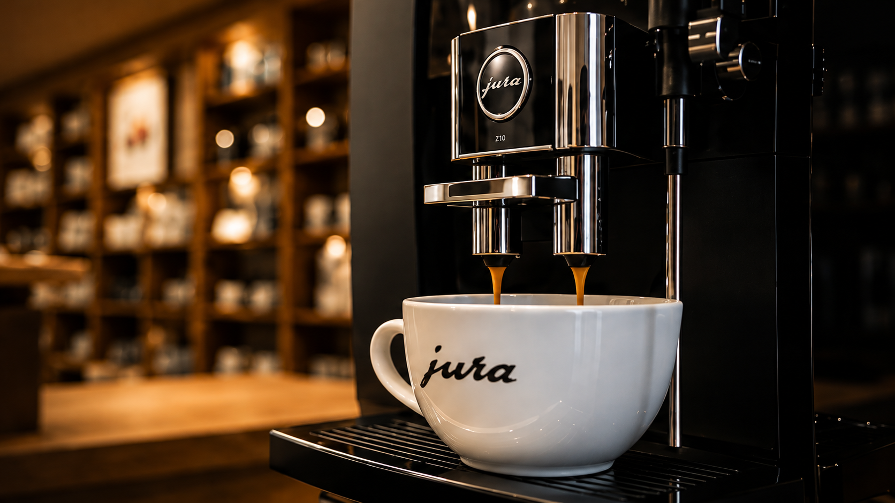
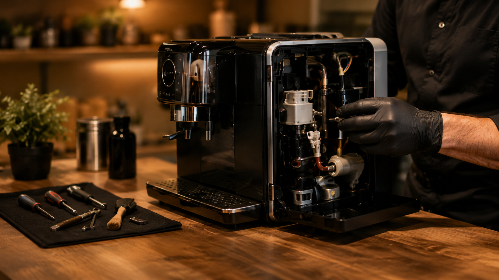
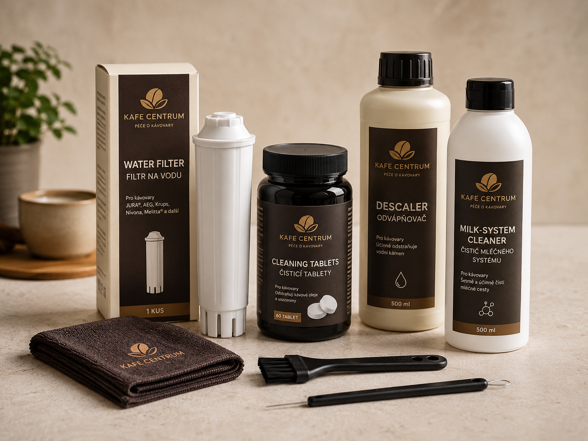

Jakou kávu prodáváme
Lu Caffé • Mäder • Coffee Limit
prodej na pobočceOdborný prodej a servis kávovarů
Pomůžeme vám vybrat vhodný kávovar podle provozu i rozpočtu, zajistíme odborný servis a poradíme s pravidelnou údržbou. V nabídce najdete nové i repasované kávovary pro domácnosti, kanceláře i menší provozy.

Lu Caffé • Mäder • Coffee Limit
prodej na pobočceJura • Nivona • Dr. Coffee
nové i repasovanéNa naší pobočce Vám představíme kvalitní kávovary od ověřených výrobců, se kterými máme dlouholeté zkušenosti. Pomůžeme Vám vybrat vhodné řešení pro domácnost, kancelář i provoz a poradíme s výběrem modelu, který bude odpovídat Vašim potřebám i způsobu používání.


Špičkové automatické kávovary známé důrazem na kvalitu, design a pohodlnou přípravu kávy.

Oblíbené kávovary s výborným poměrem mezi funkcemi, kvalitou a každodenním komfortem používání.
Moderní řešení pro domácnosti i firmy, která nabízejí spolehlivý provoz a profesionální výsledek.
Každý repasovaný kávovar prochází pečlivou kontrolou, odborným servisem a testováním. Získáte spolehlivý stroj s jistotou kvality a za příznivější cenu.
Prověřený technický stav
Vyčištěné a připravené k provozu
Výhodnější cena

Pečlivě vybrané stroje
Repasované s důrazem na kvalitu
Poskytujeme profesionální servis kávovarů pro domácnosti, kanceláře i provozovny. Zajišťujeme diagnostiku, pravidelnou údržbu, čištění, odvápnění i opravy, aby Váš kávovar fungoval spolehlivě a dlouhodobě.

Ozvěte se nám a domluvíme vhodný termín servisu.
Zkontrolujeme stav kávovaru a odhalíme příčinu závady.
Provedeme čištění, odvápnění nebo potřebnou opravu.
Kávovar vrátíme připravený na další bezproblémový provoz.
Rychle a přesně odhalíme příčinu problému.
Pravidelná péče prodlužuje životnost a zajišťuje skvělou chuť kávy.
Odvápnění a čištění pro hygienický a spolehlivý provoz.
Používáme kvalitní díly a ověřené postupy.
Objednejte servis pohodlně online nebo nás kontaktujte a rádi Vám doporučíme vhodné řešení.
Správný filtr a pravidelné čištění pomáhají prodloužit životnost kávovaru a zlepšit chuť kávy. V prodejně vám poradíme, co je vhodné právě pro váš typ kávovaru.

Stačí znát značku a model kávovaru, případně přinést starý filtr nebo fotku štítku. Pomůžeme vám vybrat správné příslušenství.
Poradenství
Ať vybíráte kávovar, kávu, filtr nebo řešíte servis, nemusíte se v tom vyznat sami. Řeknete nám, co od kávovaru očekáváte, a doporučíme řešení, které bude dávat smysl pro domácnost, kancelář nebo provoz.